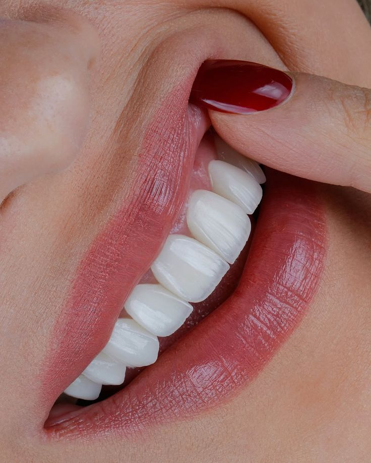
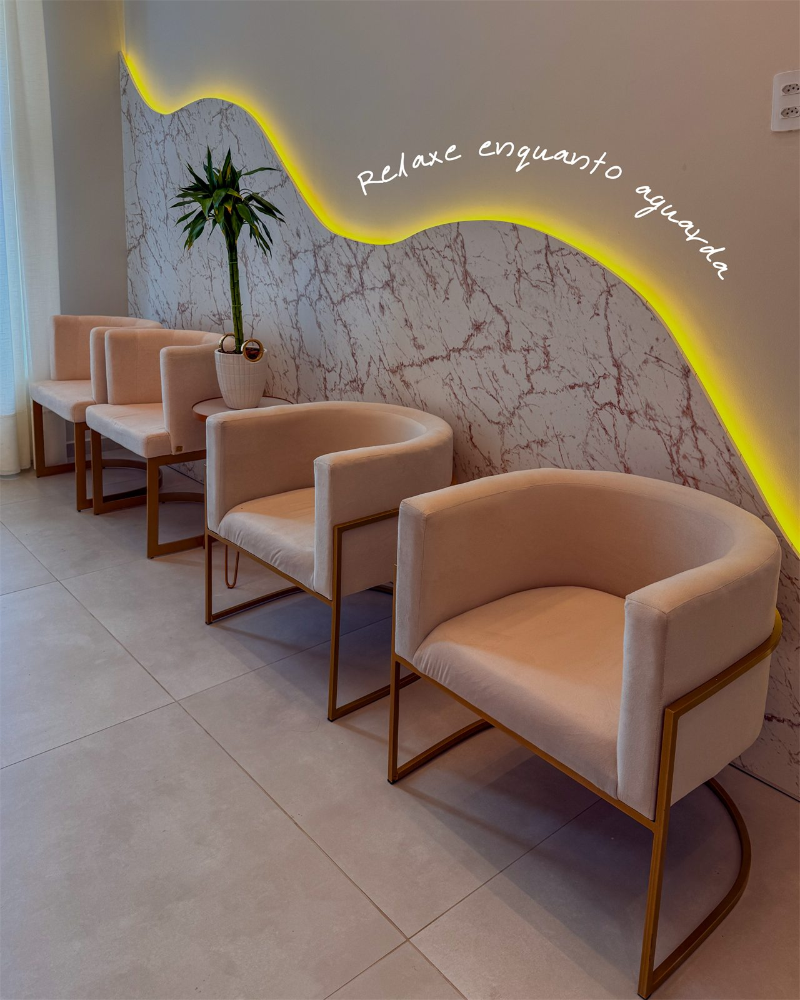

Sorriso Natural
Aparência natural, sem aspecto artificial, respeitando seus traços.
Lâminas ultrafinas de porcelana que corrigem cor, formato e harmonia do sorriso, com aparência natural. Avaliação personalizada com a Dra. Pâmela Magnus (CRO-SC 16261), em Sombrio/SC.

Lentes ultrafinas e resistentes, com brilho e translucidez naturais.
Planejamento individual, respeitando o seu rosto e a sua expressão.
Atendimento com cirurgiã-dentista registrada — CRO-SC 16261.
Acompanhamento próximo, do planejamento ao resultado final.

São lâminas ultrafinas de porcelana, aplicadas sobre os dentes para transformar o sorriso com aparência natural e harmônica.
Elas ajudam a corrigir cor, formato, tamanho, pequenos espaços e desalinhamentos, criando um sorriso uniforme e bonito. O plano de tratamento é definido após uma avaliação individual do seu caso.
Na Clinic, em Sombrio/SC, o procedimento é conduzido com planejamento e responsabilidade técnica registrada sob o CRO-SC 16261.
Um sorriso planejado para combinar com você — natural e harmônico.
Aparência natural, sem aspecto artificial, respeitando seus traços.
Uniformiza a cor e ajusta formato e tamanho dos dentes.
A porcelana mantém o brilho e resiste bem a manchas com o tempo.
Técnica que busca preservar ao máximo a estrutura do dente.
Desenho do sorriso pensado para combinar com o seu rosto.
Sorrir com confiança faz diferença no seu dia a dia.
Especialista em estética do sorriso, une sensibilidade e precisão para criar sorrisos naturais e harmônicos, com atendimento próximo e personalizado.
@pamelamagnussAgende sua avaliação pelo WhatsApp e tire suas dúvidas sobre as lentes.
Av. Nereu Ramos, SN — Centro
Sombrio/SC · CEP 88960-000
Segunda a sexta
09h00 às 12h00 · 13h30 às 18h00
Dê o primeiro passo hoje. Agende sua avaliação e descubra se as lentes são indicadas para o seu caso.